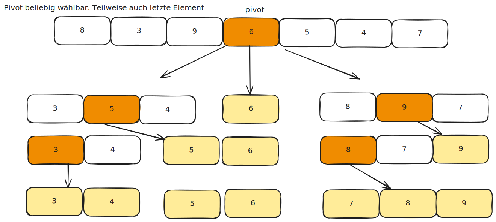

Algorithmen und Datenstruktur¶
Einführung in Algorithmen und Datenstrukturen¶
Ein Algorithmus ist eine systematische Methode zur Lösung eines Problems in endlich vielen Schritten. Er kann als Rezept oder Anleitung verstanden werden.
Eine Datenstruktur ist eine Möglichkeit, Daten effizient zu speichern und zu organisieren.
🔍 2. Suchalgorithmen¶
2.1 Lineare Suche¶
- Die einfachste Methode zur Suche in einer Liste.
- Durchläuft alle Elemente nacheinander.
- Laufzeit: O(n) im Worst Case.

2.2 Binäre Suche (Binary Search)¶
- Funktioniert nur bei sortierten Listen/Arrays.
- Durchsucht die Liste durch wiederholtes Halbieren des Suchbereichs.
- Laufzeit: O(logn)O(\log n)O(logn) im Worst Case (logarithmische Komplexität).
FUNKTION binaere_suche(arr, links, rechts, ziel):
WÄHREND links <= rechts:
mitte = (links + rechts) / 2
WENN arr[mitte] == ziel:
GIB mitte zurück // Index des gesuchten Elements
SONST WENN arr[mitte] < ziel:
links = mitte + 1 // Suche im rechten Teil
SONST:
rechts = mitte - 1 // Suche im linken Teil
GIB -1 zurück // Falls Element nicht gefunden
int binaere_suche(int arr[], int links, int rechts, int ziel) {
while (links <= rechts) {
int mitte = links + (rechts - links) / 2;
if (arr[mitte] == ziel)
return mitte; // Element gefunden
if (arr[mitte] < ziel)
links = mitte + 1; // Suche im rechten Teil
else
rechts = mitte - 1; // Suche im linken Teil
}
return -1; // Element nicht gefunden
}
public class BinarySearch {
public static int binaereSuche(int[] arr, int ziel) {
int links = 0, rechts = arr.length - 1;
while (links <= rechts) {
int mitte = links + (rechts - links) / 2;
if (arr[mitte] == ziel)
return mitte; // Element gefunden
if (arr[mitte] < ziel)
links = mitte + 1; // Suche im rechten Teil
else
rechts = mitte - 1; // Suche im linken Teil
}
return -1; // Element nicht gefunden
}
def binaere_suche(arr, ziel):
links, rechts = 0, len(arr) - 1
while links <= rechts:
mitte = (links + rechts) // 2
if arr[mitte] == ziel:
return mitte # Element gefunden
elif arr[mitte] < ziel:
links = mitte + 1 # Suche im rechten Teil
else:
rechts = mitte - 1 # Suche im linken Teil
return -1 # Element nicht gefunden
# Beispiel
arr = [1, 3, 5, 7, 9, 11, 13]
ziel = 7
ergebnis = binaere_suche(arr, ziel)
if ergebnis != -1:
print(f"Element gefunden an Index {ergebnis}")
else:
print("Element nicht gefunden")
{kind=link}
🗃️3. Sortieralgorithmen¶
3.1 Bubble Sort¶
- Vergleicht benachbarte Elemente und vertauscht sie.
- Sehr ineffizient bei großen Datenmengen: O(n²) Laufzeit.
🔢 Schritt-für-Schritt¶
- Durchlaufe die Liste mehrfach.
- Vergleiche benachbarte Elemente.
- Tausche sie, falls das linke größer ist als das rechte.
- Wiederholen, bis keine Vertauschung mehr nötig ist.
{kind=link}
3.2 Quicksort¶
- Ein effizienter Divide & Conquer Algorithmus.
- Wählt ein Pivot-Element, partitioniert die Liste und sortiert rekursiv.
- Laufzeit: O(n log n) im Durchschnitt.
🚀 Schritt-für-Schritt¶
- Wähle ein Pivot-Element (z. B. das letzte Element).
- Partitioniere die Liste:
- Elemente kleiner als Pivot.
- Das Pivot-Element.
- Elemente größer als Pivot.
- Rufe Quicksort rekursiv für die beiden Partitionen auf.
#include <stdio.h>
void swap(int *a, int *b) {
int temp = *a;
*a = *b;
*b = temp;
}
int partition(int arr[], int low, int high) {
int pivot = arr[high];
int i = (low - 1);
for (int j = low; j < high; j++) {
if (arr[j] < pivot) {
i++;
swap(&arr[i], &arr[j]);
}
}
swap(&arr[i + 1], &arr[high]);
return (i + 1);
}
void quicksort(int arr[], int low, int high) {
if (low < high) {
int pi = partition(arr, low, high);
quicksort(arr, low, pi - 1);
quicksort(arr, pi + 1, high);
}
}
public static void quicksort(int[] arr, int low, int high) {
if (low < high) {
int pi = partition(arr, low, high);
quicksort(arr, low, pi - 1);
quicksort(arr, pi + 1, high);
}
}
private static int partition(int[] arr, int low, int high) {
int pivot = arr[high];
int i = (low - 1);
for (int j = low; j < high; j++) {
if (arr[j] < pivot) {
i++;
int temp = arr[i];
arr[i] = arr[j];
arr[j] = temp;
}
}
int temp = arr[i + 1];
arr[i + 1] = arr[high];
arr[high] = temp;
return i + 1;
}
In unserem grafischen Beispiel:
Pivot = Array[Array size / 2]

{kind=link}
🌳 4. Bäume¶
Ein Baum ist eine hierarchische Datenstruktur mit Knoten.
Der oberste Knoten wird als Wurzel bezeichnet.
4.1 Binäre Suchbäume (BST)¶
- Jeder Knoten hat höchstens zwei Kinder.
- Linkes Kind: kleiner als der Elternknoten.
- Rechtes Kind: größer als der Elternknoten.
- Effizient für Suchen, Einfügen, Löschen: O(log n).
🌱 Einfügen in einen BST¶
- Leerer Baum: Das Element wird die Wurzel.
- Wert < Knoten: Gehe nach links.
- Wert > Knoten: Gehe nach rechts.
- Finde die richtige Position und füge ein.
#include <stdio.h>
#include <stdlib.h>
struct Node {
int data;
struct Node* left;
struct Node* right;
};
struct Node* newNode(int data) {
struct Node* node = (struct Node*)malloc(sizeof(struct Node));
node->data = data;
node->left = node->right = NULL;
return node;
}
struct Node* insert(struct Node* root, int data) {
if (root == NULL) return newNode(data);
if (data < root->data)
root->left = insert(root->left, data);
else
root->right = insert(root->right, data);
return root;
}
class Node {
int data;
Node left, right;
public Node(int item) {
data = item;
left = right = null;
}
}
public Node insert(Node root, int data) {
if (root == null) {
root = new Node(data);
return root;
}
if (data < root.data)
root.left = insert(root.left, data);
else
root.right = insert(root.right, data);
return root;
}
{kind=link}
🗃️ 5. Heaps und Prioritätswarteschlangen¶
Ein Heap ist eine spezielle Binärbaum-Datenstruktur:
- Ein Min-Heap hat die Eigenschaft: Der kleinste Wert ist an der Wurzel.
- Ein Max-Heap hat die Eigenschaft: Der größte Wert ist an der Wurzel.
Heap-Operationen¶
- Einfügen: Element wird am Ende eingefügt und „nach oben geblubbert“.
- Entfernen des Minimums: Wurzel entfernen, letztes Element nach oben setzen und „nach unten sinken“.
Max-Heap (Einfügen und Entfernen)¶
- Eigenschaften:
- Vollständiger Binärbaum (alle Ebenen sind vollständig gefüllt, außer evtl. der letzten).
- Elternknoten ist größer oder gleich seinen Kindknoten (Max-Heap-Eigenschaft).
Schritt-für-Schritt: Einfügen in einen Max-Heap¶
- Füge das neue Element am Ende des Heaps ein.
- "Heapify Up": Vergleiche das Element mit seinem Elternknoten.
- Falls es größer ist, tausche die beiden. kleiner bei Min-Heap
- Wiederholen, bis die Max-Heap-Eigenschaft erfüllt ist.
Warum ist die Suche in einem Heap ineffizient?¶
In einem Heap gilt die Heap-Eigenschaft:
- Min-Heap: Eltern ≤ Kinder
- Max-Heap: Eltern ≥ Kinder
Das bedeutet:
- Wir wissen nur, dass der Wurzelknoten der kleinste (Min-Heap) oder größte (Max-Heap) ist.
- Aber wir wissen nicht, wie die anderen Elemente zueinander stehen.
- Keine vollständige Sortierung → Wir können nicht gezielt links oder rechts gehen.
Suchstrategien im Heap¶
Methode 1: Breitensuche (BFS)¶
- Level für Level durchsuchen (wie eine Warteschlange).
- Gut, wenn die gesuchte Zahl nah an der Wurzel liegt.
Methode 2: Tiefensuche (DFS)¶
- Rekursiv nach links und rechts gehen.
- Praktisch, wenn der Baum groß ist.
Typische Anwendungsfälle:¶
-
Prioritätswarteschlangen (Priority Queues):
- Wenn du Aufgaben nach ihrer Wichtigkeit verarbeiten willst.
- Beispiel: Betriebssysteme verwalten Prozesse mit unterschiedlichen Prioritäten.
- → Immer der höchste Prioritätsprozess läuft zuerst (Min-/Max-Heap).
-
Dijkstra-Algorithmus (kürzeste Wege in Graphen):
- Heap wird verwendet, um den nächsten Knoten mit der kürzesten Distanz schnell zu finden. Mit Min-Heap
- Ohne Heap wäre dieser Algorithmus viel langsamer.
-
Heapsort (Sortieralgorithmus):
- Effizienter Sortieralgorithmus mit \(O(n \log n)\) Laufzeit.
- Besser als Bubble Sort oder Insertion Sort.
-
Echtzeit-Systeme:
- Echtzeitspiele, Simulationen, Event-Handling → Aufgaben werden nach Priorität sortiert.
-
Median-Findung (Streaming-Daten):
- Kombination aus Min-Heap und Max-Heap hilft, den Median von Datenströmen effizient zu berechnen.
#include <stdio.h>
// Hilfsfunktion zum Tauschen von zwei Elementen
void swap(int *a, int *b) {
int temp = *a;
*a = *b;
*b = temp;
}
// "Heapify"-Funktion für einen Max-Heap
void heapify(int arr[], int n, int i) {
int largest = i; // Initialisiere das größte Element als Wurzel
int left = 2 * i + 1; // Linkes Kind
int right = 2 * i + 2; // Rechtes Kind
// Vergleiche linkes Kind mit der Wurzel
if (left < n && arr[left] > arr[largest])
largest = left;
// Vergleiche rechtes Kind mit dem aktuell größten
if (right < n && arr[right] > arr[largest])
largest = right;
// Falls das größte Element nicht die Wurzel ist, tausche sie
if (largest != i) {
swap(&arr[i], &arr[largest]);
heapify(arr, n, largest); // Rekursiv heapify anwenden
}
}
// Heapsort-Algorithmus
void heapsort(int arr[], int n) {
// Max-Heap erstellen
for (int i = n / 2 - 1; i >= 0; i--)
heapify(arr, n, i);
// Elemente sortieren
for (int i = n - 1; i >= 0; i--) {
swap(&arr[0], &arr[i]); // Wurzel ans Ende verschieben
heapify(arr, i, 0); // Heapify auf den reduzierten Heap anwenden
}
}
// Hilfsfunktion zum Drucken des Arrays
void printArray(int arr[], int n) {
for (int i = 0; i < n; i++)
printf("%d ", arr[i]);
printf("\n");
}
int main() {
int arr[] = {4, 10, 3, 5, 1};
int n = sizeof(arr) / sizeof(arr[0]);
heapsort(arr, n);
printf("Sortiertes Array: ");
printArray(arr, n);
return 0;
}
public class HeapSort {
// Hilfsfunktion zum "Heapify"-Prozess
public static void heapify(int[] arr, int n, int i) {
int largest = i; // Wurzel
int left = 2 * i + 1; // Linkes Kind
int right = 2 * i + 2; // Rechtes Kind
// Linkes Kind größer als Wurzel?
if (left < n && arr[left] > arr[largest])
largest = left;
// Rechtes Kind größer als das größte Element?
if (right < n && arr[right] > arr[largest])
largest = right;
// Falls das größte Element nicht die Wurzel ist, tauschen
if (largest != i) {
int temp = arr[i];
arr[i] = arr[largest];
arr[largest] = temp;
// Rekursives Heapify
heapify(arr, n, largest);
}
}
// Heapsort-Algorithmus
public static void heapSort(int[] arr) {
int n = arr.length;
// Max-Heap erstellen
for (int i = n / 2 - 1; i >= 0; i--)
heapify(arr, n, i);
// Heap sortieren
for (int i = n - 1; i > 0; i--) {
// Wurzel (größtes Element) ans Ende verschieben
int temp = arr[0];
arr[0] = arr[i];
arr[i] = temp;
// Heapify auf den verkleinerten Heap anwenden
heapify(arr, i, 0);
}
}
// Hilfsfunktion zum Ausgeben des Arrays
public static void printArray(int[] arr) {
for (int i : arr)
System.out.print(i + " ");
System.out.println();
}
public static void main(String[] args) {
int[] arr = {4, 10, 3, 5, 1};
heapSort(arr);
System.out.println("Sortiertes Array:");
printArray(arr);
}
}
# Heapify-Funktion für einen Max-Heap
def heapify(arr, n, i):
largest = i # Wurzel
left = 2 * i + 1 # Linkes Kind
right = 2 * i + 2 # Rechtes Kind
# Linkes Kind größer als Wurzel?
if left < n and arr[left] > arr[largest]:
largest = left
# Rechtes Kind größer als das größte Element?
if right < n and arr[right] > arr[largest]:
largest = right
# Falls das größte Element nicht die Wurzel ist, tausche
if largest != i:
arr[i], arr[largest] = arr[largest], arr[i]
heapify(arr, n, largest) # Rekursives Heapify
# Heapsort-Algorithmus
def heapsort(arr):
n = len(arr)
# Max-Heap erstellen
for i in range(n // 2 - 1, -1, -1):
heapify(arr, n, i)
# Heap sortieren
for i in range(n - 1, 0, -1):
arr[i], arr[0] = arr[0], arr[i] # Wurzel ans Ende verschieben
heapify(arr, i, 0)
# Test des Heapsort
arr = [4, 10, 3, 5, 1]
heapsort(arr)
print("Sortiertes Array:", arr)
{kind=link}